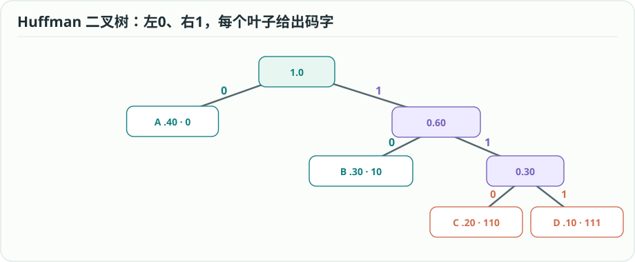
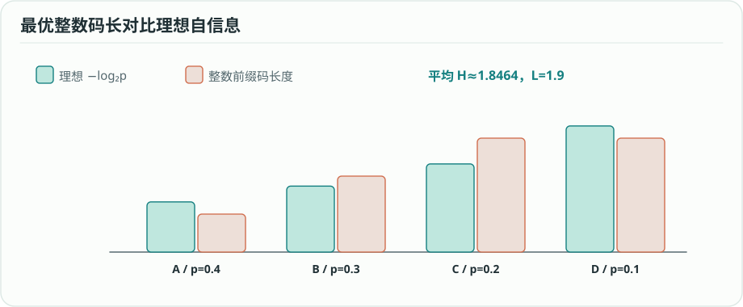

为什么“先合并最罕见的符号”竟然是最优策略？
有四个符号 A、B、C、D，概率分别为 0.4、0.3、0.2、0.1。对前缀码而言，较长的路径应该留给较低概率的符号，因为一次出现的成本是码长乘概率。Huffman 的关键贪心选择是：总有一个最优前缀树，可以把概率最小的两个符号安排成最深处的一对兄弟叶子。
这条“存在最优树”性质不是说任意树只要让两个低频节点挨着就自动最优。只有将两个最小权重合并为一个新节点，再对子问题重复同样的构造，才得到完整算法。
从小到大合并权重，构造内部节点
将每个符号作为叶子，权重即其概率。每次从当前森林中选出两个最小权重的节点，将它们作为兄弟，创建权重为二者之和的新父节点，再放回森林。
合并完成后从根向叶子走，左边记 0、右边记 1，得到一个二进制前缀码。若遇到权重完全相同的节点，不同稳定排序可能产生不同码字；只要每次合并最小的两个，期望码长仍然最优。
完整树与码表如何对应？

| 符号 | 概率 p | Huffman 码字 | 长度 ℓ | p × ℓ |
|---|---|---|---|---|
| A | 0.4 | 0 | 1 | 0.4 |
| B | 0.3 | 10 | 2 | 0.6 |
| C | 0.2 | 110 | 3 | 0.6 |
| D | 0.1 | 111 | 3 | 0.3 |
平均长度 L=0.4+0.6+0.6+0.3=1.9 bits/符号。对这个码字长度表，Kraft 和为 1/2+1/4+1/8+1/8=1，说明所有可用二进制树叶子空间被利用完。
为什么贪心合并不破坏最优性？
证明可以分成三个交换与归约步骤：
- 把树调整成满二叉树：没有仅有一个孩子的内部节点，否则压缩该节点可让码长不增加。
- 在最深层取一对兄弟叶子。如果这两个叶子不是概率最小的两个，就交换叶子上的符号权重。把较小权重移到较深位置不会增加加权码长，于是存在最优树把最小两个放在这对兄弟上。
- 把这对兄弟叶子权重 a、b 折叠成一个父叶，权重 a+b；折叠前后期望长度相差固定的 a+b。要使原问题最优，只须对子问题求最优树；由归纳法可得到 Huffman 贪心算法。
如果只记住“把两个最小值相加”，却无法说清楚为什么它们能作为最深兄弟叶子，就还没有掌握最优性论证的核心。
最优也不等于每个符号都达到理想长度
自信息 −log₂p(x) 允许非整数，而传统二进制前缀码的码长必须是整数。此例各理想长度约为 1.322、1.737、2.322、3.322 bits；Huffman 分别使用 1、2、3、3 位。

它不表示“总能压缩任意一条消息”；如果只有一个符号，理论上可用空码字，但工程实现需要解决流长度、终止标志等协议细节。
概率变动时，编码树会怎样变？
保持剩余三个符号 B:C:D 的概率比例为 3:2:1，仅改变 p(A)，让浏览器重新构建最优树。观察最优长度有时保持不变、有时会跃迁：这是整数码长的结果，而不是计算错误。
基于二叉最小堆合并的等价操作，小数舍入仅用于显示。权重相同时可有不止一种最优树。
可运行的最小编码与解码
Python 的 heapq 可实现 O(M log M) 的树合并。重构后的仓库还有 examples/coding.py 作为完整自检示例，提供可确定复现的 Huffman 编码、解码和 Kraft 断言。
from examples.coding import huffman_codebook, decode_prefix
p = {"A": .4, "B": .3, "C": .2, "D": .1}
codes = huffman_codebook(p)
message = "ABCD"
bits = "".join(codes[s] for s in message)
assert decode_prefix(bits, codes) == message
L = sum(p[s]*len(codes[s]) for s in p)
assert abs(L - 1.9) < 1e-12
print(codes, bits, L)真实压缩流还必须传输或约定码表、符号数、文件长度与终止边界。规范 Huffman 码可以用码长列表重建码字，减少码表开销，但不会改变这些码长所决定的理论期望长度。
来源与延伸阅读
- D. A. Huffman (1952), A Method for the Construction of Minimum-Redundancy Codes：提出最小冗余构造。
- MIT 6.441 (2016)，Chapter 6：Huffman、可唯一译码与平均长度理论。
- Cover & Thomas，第 5.6–5.8 节：最优前缀码证明。